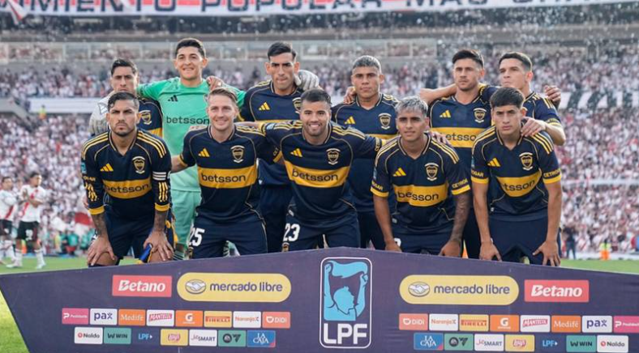
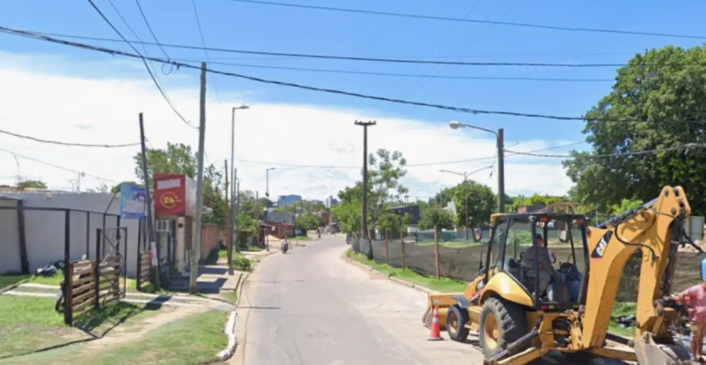

LIGA PROFESIONAL
Con gol de Paredes, Boca le ganó a River en el Monumental
El único gol del partido llegó sobre el final del primer tiempo con un tiro penal.

Boca derrotó a River por 1 a 0 en un Superclásico en el que aprovechó un momento de superioridad sobre el final del primer tiempo para abrir el marcador en el estadio Monumental. El partido correspondió a la decimoquinta fecha del Torneo Apertura 2026 y le permitió al Xeneize quedar muy cerca de la clasificación en la Zona A.
La visita marcó el único gol del partido en el quinto minuto de descuento del primer tiempo, con un penal ejecutado con maestría por el mediocampista Leandro Paredes que retiró en el segundo tiempo con una molestia muscular.
En la próxima fecha, el Xeneize visitará a Defensa y Justicia, el jueves 23 de marzo a las 20:00, mientras que el elenco que conduce Eduardo Coudet jugará como local ante Aldosivi, el sábado 25 de abril desde las 21:30.
El primer acercamiento fue de Boca, a los nueve minutos, con un gran pase largo de primera del mediocampista Leandro Paredes para la subida del delantero Miguel Merentiel, que no pudo terminar de ingresar al área antes de ser cerrado por ambos centrales del local.

River se acercó al primer gol de la tarde a los 19 minutos, con un remate lejano del mediocampista correntino Juan Cruz Meza, que tenía buena potencia pero poca dirección: se fue por el poste derecho del arquero Leandro Brey.
En un primer tiempo que se destacaba más por lo disputado que por el juego, las situaciones claras de gol, de ambos lados, se dieron en los últimos minutos.
La mejor jugada de River en el primer tiempo llegó a los 43 minutos, con un remate de media vuelta del delantero correntino Maximiliano Salas desde el borde del área, con un zurdazo que se fue no muy lejos del ángulo derecho de Brey.
Boca tuvo su primera llegada, y de mucha claridad, en tiempo cumplido de la primera etapa, con otro pase largo de Paredes para Merentiel, que se aprovechó de una defensa desalineada del local y quedó mano a mano con el guardameta Santiago Beltrán, aunque el delantero uruguayo erró con su remate bajo.
En el segundo y último minuto de descuento de la primera etapa, una mano extendida del defensor Lautaro Rivero dentro del área generó un penal para la visita, del que se hizo cargo el mediocampista Leandro Paredes, tres minutos después. El exjugador de la Roma sacó un gran remate que entró por el ángulo izquierdo de Beltrán, para abrir el marcador en el Superclásico.
Boca tuvo dos llegadas claras en los primeros minutos del segundo tiempo: a los cinco minutos, una salida pésima desde el fondo del defensor Lautaro Rivero le entregó la pelota a Merentiel en la medialuna del área, con un remate de primera que fue bloqueado por el central Lucas Martínez Quarta.
Solo un minuto después, un disparo por el costado derecho del volante Santiago Ascacibar fue rozado por Beltrán y enviado por encima del travesaño.
ÚLTIMAS NOTICIAS
En una camioneta llevaban 290 celulares por un monto de $65 millones
Recuperaron en San Cosme una motocicleta robada en Corrientes
Irán estudia la propuesta estadounidense para poner fin a la guerra

CORTE TOTALUna calle permanecerá cortada por tres semanas en Corrientes: los motivos
Perdieron el rastro de 23 pasajeros del crucero de lujo con hantavirus
Milei aseguró que "el sueño americano no está muerto" y que "renace" en Argentina
Bullrich le reclamó a Adorni que presente su declaración jurada
Capturaron a un hombre en Corrientes con pedido de detención federal
Fuente: Nota original de el Litoral